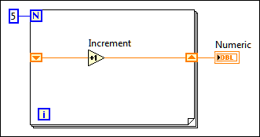

Use an initialized shift register to reset the initial value of a shift register each time a VI runs.
Complete the following steps to reset the initial value of a shift register.
In the previous block diagram, the For Loop executes five times, incrementing the value the shift register carries by one each time. After five iterations of the For Loop, the shift register passes the final value, 5, to the indicator and the VI quits. Each time you run the VI, the shift register begins with a value of 0.
Use a loop with an uninitialized shift register so that each time the VI runs, the initial input of the shift register is the last value from the previous execution. Leave the input to the left shift register terminal unwired for an uninitialized shift register to preserve state information between subsequent executions of a VI.
|
Note If you do not initialize the register, the loop uses the value written to the register when the loop last executed or the default value for the data type if the loop has never executed. |
The following block diagram shows an uninitialized shift register.
In the previous block diagram, the For Loop executes five times, incrementing the value the shift register carries by one each time. The first time you run the VI, the shift register begins with a value of 0, which is the default value for a 32-bit integer.
After five iterations of the For Loop, the shift register passes the final value, 5, to the indicator, and the VI quits. The next time you run the VI, the shift register begins with a value of 5, which was the last value from the previous execution. After five iterations of the For Loop, the shift register passes the final value, 10, to the indicator.
If you run the VI again, the shift register begins with a value of 10, and so on. Uninitialized shift registers retain the value of the previous iteration until you close the VI or LabVIEW recompiles the block diagram.